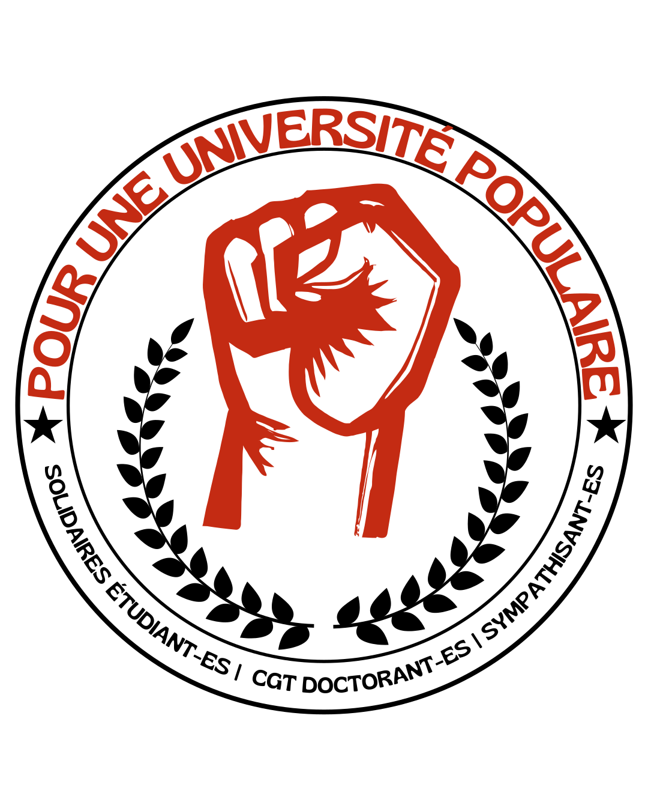

Université gratuite, émancipatrice, de proximité
Le 23 et 24 novembre 2026, nous votons pour élire nos représentant⋅es au sein des différents conseils de l’université.
Ces instances influencent nos études. Bien que les étudiantes et étudiants y soient peu représentés, ils peuvent y mener des batailles pour protéger ou gagner des droits, ou y obtenir des informations utiles.
Nous présentons donc notre liste étudiante Pour une université populaire, portée par Solidaires étudiant·es et le collectif doctorant de la CGT FercSup, pour une vie étudiante digne, pour une université égalitaire et inclusive, pour un service public de qualité, une université durable et une diversité culturelle, pour une recherche pérenne, diversifiée et indépendante. Composé d'étudiant·es engagé·es au quotidien, notre liste est soutenue par la CGT FercSup et la liste UHS. Elle vise à porter notre projet, vos demandes et vos problèmes dans les instances dirigeantes de l'université.
Vote les 23 et 24 novembre 2026
Vérifie ton inscription sur elections.univ-pau.fr avant le vendredi 13 novembre 2026
Instagram : @univpop_pau
Courriel : univpoppau@tutamail.com
univpop-pau.fr
Depuis plusieurs décennies, l'université et la recherche se néolibéralisent : la concurrence pour des postes précaires dégrade la santé physique et mentale des chercheur·ses, ainsi que leur temps de recherche et leur vie personnelle et familiale. Pour sortir les doctorant·es et les docteur·es de la précarité, l'université doit prendre des mesures concrètes.
Pour les doctorant·es